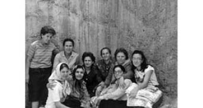

“Oğlumuzun İşkence Edilmiş Halini Görünce On Yaş Birden Yaşlandık Sanki.”
Orhan Aydın29
Eşim Adalet Aydın’ı 2008 yılı Kasım ayında böbrek hastalığı neticesinde kaybettim. Diyaliz hastasıydı. İki oğlum var. Bülent 1958 doğumlu, Levent ise 1961 doğumludur.
12 Eylül döneminde ben, İstanbul İl Jandarma Alay Komutanlığı karargâhında görevliydim. Büyük oğlum Bülent Aydın İstanbul Teknik Üniversitesi’nde Maden Mühendisliği, Levent Aydın ise Yıldız Teknik Üniversitesi’nde Mimarlık öğrencisiydi. Eşim ev kadınıydı.
Bülent’in üniversite yıllarında devrimci ve Dev Genç’li olduğunu biliyorduk. Bir iki kez öğrenci olaylarında gözaltına alınmıştı. Okul işgaline, boykotlara falan katılmıştı. Okul derneğinin de üyesiydi. Arkadaşlarının da bazısını tanırdım. Biz Bakırköy’de oturuyorduk. Bülent bazen eve gelmez, öğrenci arkadaşlarıyla kaldığını veya ders çalıştıklarını söylerdi.
Bülent, 12 Eylül’den sonra eve daha az gelmeye başladı. Geldiği zamanlar, geceleri sabahlar, bir şeyler okur ve yazar, dışarı ışık sızmaması için de odasının penceresini kalın örtüyle kapatırdı.
Bülent, 1981 yılının Haziran ayında ben İstanbul’da görevdeyken bir gece yarısı eve gelen 20 kadar Emniyet 1. Şube sivil polisleri tarafından gözaltına alınmış. Biz evde yoktuk. Bülent’in o gün eve geleceğini de bilmiyorduk. Evin etrafının sarıldığını ve polislerin önce kapıyı çaldığını, komşulara sorduğunu, evden bir ses gelmemesi üzerine eve girdiklerini sonradan öğrendik.
Biz eve geldiğimizde, evde sadece Bülent’in odasında kaba bir arama yapılmış ama etraf fazla kurcalanmamıştı. Bülent’in kitapları falan vardı. Benim jandarmada görevli olduğumu öğrenince, Bülent’i elleri kelepçeli ve gözleri bağlı olarak bir sivil Mercedes arabaya bindirip hızlıca götürmüşler.
Gayrettepe’deki Emniyet binasında 45 gün süren gözaltından sonra, oğlumu ve arkadaşlarını sivil bir kamyonetle Selimiye’ye yine elleri kelepçeli olarak getirip askeri hâkimliğe çıkardılar. Bülent ve bir arkadaşını “Devletin bütünlüğünü yok etmek, anayasayı zor yoluyla kaldırmak” gibi suçları kapsayan 146/1. maddeden idam hükmüyle o gün tutukladılar. Ve bu suçtan uzun süre sıkıyönetim askeri mahkemesinde yargılandı. İstanbul’da Dev-Yol’un üst düzey yöneticisi olduğu iddia ediliyordu. Anne ve babası olarak tabii bizim bundan zerre kadar haberimiz yoktu. 1986 yılının Mart ayına kadar Hasdal, Sultanahmet, Bayrampaşa Özel Tip ve Metris Askeri cezaevlerinde kaldı. Çıktıktan sonra bir süre okuluna da gitti ama askere aldılar, okulu yarıda kaldı, bitiremedi. Askerden döndükten sonra evlendi ve çalışmaya başladı.
Aile Yapımız ve Hayatımız
Ben Artvin Hopalıyım. Şavşat’ta, Ardahan’da büyüdüm. Ortaokulu bitirdikten sonra İstanbul’a Astsubay Okulu’na geldim. Biz 2 kız 4 erkek, memur çocuğuyduk, aile terbiyesi almış, orta halli kişilerdik. Hepimiz okuduk. Babam otoriterdi. Onun yanında ne ayak ayak üstüne atabildik, ne de fazla konuşma hakkımız vardı. Büyüklerin yanında sigara içmedik. Hepimiz sporla ilgiliydik. Hepimiz sonraki yıllarda memur, öğretmen olduk. Böyle büyüdük.
Ben ise 3 yıl arayla doğan iki oğlumu farklı şekilde büyüttüm. Bak şimdi birisi burada, biri burada değil, ama sor bir tek fiske vurmadan ve kötü söz etmeden çocukları büyüttüm. Anneleri ki, ona ben Eda diye hitap ederdim, çocuklarına çok bağlıydı ama onlara zaman zaman da kızar azarlardı. Biraz “Osmanlı kadını” denen yapıdaydı. Yaramazlık yaptıklarında bunları azarlar hatta eline terliği alırdı. Ben bir kez bile vurmadan, azarlamadan evlat büyüten bir baba oldum. O zamanlar pek de benzerim yoktu diyebilirim.
Yanımızda hep bizde kalan bir akraba çocuğu da olurdu. Onları da okutuyorduk. Çocuklar evde top oynar, bir şeyleri kırıp dökerlerdi. Yanlış bir şey yaptıkları zaman anneleri eve gelmeden önce koşa koşa benim daireye gelirlerdi. Bir kabahat yaptıklarını hemen anlar, hadi beni bekleyin de eve beraber gideriz derdim. Yolda konuştukça, oğlum yine ne yaptınız, ne ettiniz diye sorardım. Ya bir cam kırmıştır, ya kapı devrilmiştir. Eve gelince bunlar arkama saklanır, ben kabahati üstlenirdim. “Öğleyin eve geldim, çocuklarla top oynadık camı kırdım” derdim.
Biz çocukları hiç üzmeden ve hatta pek azarlamadan büyüttük. Ailemizde hiçbir sertlik olmadı. Ben zaten Silahlı Kuvvetler mensubuyum ve bizde eşi ve çocuklarıyla herhangi anormal bir şey yaşayan adamı meslekten dahi atarlardı. Bunların hiçbirine maruz kalmadan öylece 45 sene geçirdik eşimle. Bütün bu yıllar boyunca ne çocuklarımdan ne de eşimden asla ve asla şikâyetçi olmadım. Çocuklar iyi okudular ve birkaç yılda bir farklı yerlere tayin olmamıza rağmen iyi okulları kazandılar.
Yaptığım iyi şeylerden biri, eve hep yeni kitap almamdır. Çocuklar büyüyüp kendi istedikleri kitapları almaya başlayana kadar, her ay o yıllarda Altın Kitaplar diye çıkan Nobel Edebiyat serisinin kitaplarını alırdım. Daha sonra bu alışkanlık özellikle Bülent’te devam etti ve çok kitap okuyan bir çocuk oldu.
Çocuklar Büyüyor, Darbe Oluyor...
Bülent 1975 yılında üniversiteyi kazandıktan sonra bir yıl İstanbul’da akrabalarda kaldı. Ben sonra tayinen buraya geldim ve Bakırköy’de oturduk. Çocukların üniversite yılları oldukça hareketli yıllardı. Tabii ben vazifedeyim daha çok Eda uğraşıyor çocuklarla. Zaman zaman ufak tefek sıkıntılar oluyor ama mühim bir sıkıntı olmadı bizim evde. Çatışmaları ve ölen gençleri duyuyoruz. Okullar, kahveler taranıyor. Tedirgin oluyoruz tabii o dönemler.
Derken sıkıyönetim dönemi başladı. Tabii çocuklara da ve özellikle Bülent’e dikkatli olmalarını söylüyoruz. Ben 1960 İhtilali’ni de 12 Mart’ı da görevde yaşamış bir insanım.
12 Eylül 1980 gününü de hayal meyal anımsıyorum şimdi. Hava iyice gergindi, mesaide falan da öyle. O günlerde olağanüstü bir durum olacağını da sanırım bir arkadaşım söylemişti. Aynı sitedeki bacanağın evinde oturuyorduk. Emekli teknik ressamdı. Bir telefon geldi. Bacanak, ordunun idareyi ele alacağından söz edildiğini söyledi. İsim vermedi ama olur mu olur diyerek hemen toparlandık. Önce bacanağın solcu gazeteci damadını aradık. Böyle bir şey var deyip, evde sakıncalı bir şey varsa yok etmesini söyledik. Benim evimde bildiğim kadarıyla yasak bir şey yoktu. Levent böyle şeylere pek meraklı değildi ama Bülent’in odası kitap, dergi ve gazeteyle doluydu. Plakları falan da vardı. Ama hepsi satılan, yasal şeylerdi. Dolayısıyla ben hiçbir şeye el sürmedim. Hakikaten de o gece yarısından itibaren 1980 İhtilali başladı.
Oğlumu Götürüyorlar...
Bülent, İTÜ Maden Fakültesi son sınıf öğrencisiydi. Darbeden itibaren bazı okul arkadaşlarını falan içeri aldıklarını biliyorum. Gazetelerde, televizyonda her gün operasyonları ve yakalananları ilan ediyorlar. Bunlar da o haberleri dikkatle izliyorlar. O günlerde zaten herkes biraz tedirgin. Ağabeyimin oğlu Ankara’da Ziraat Fakültesi’nde okuyor. Üniversiteye hazırlanırken bizde kalmıştı. Onun da sıkıntısı var, okula gidemiyor. Onu da aldılar. Mamak’ta bir süre yattı. Bülentlerin Ankara davasında yargılandı. Daha sonra kardeşimin kızı Ankara Siyasal Bilgiler’e girdi. O da zorluk çekti. Gözaltına falan alındı ve bütün hayatı olumsuz etkilendi. Bülent’i çok severdi. Ziyaretine de gelirdi. Sonraki yıllarda hastalandı ve genç yaşta kaybettik onu.
Darbeden sonraki yaz tutuklandı Bülent. Bunların gruba operasyon yapılıyor. Bir yakın arkadaşı da yakalanmış ama Bülent’in sanıyorum bundan haberi yok. O da ortadan kaybolan arkadaşını arıyor. Çocuğu çok sıkıştırıyorlar tabii Emniyet’te ve bizim evi tarif etmek zorunda kalıyor. O da Bülent’in evde olmadığını düşünüyor. 12 Haziran 1981 gecesi bizim eve geliyorlar.
Biz de komşulara gitmiştik. Komşularımız bize haber verdiler. Eve gittik ki Bülent’i polisler alıp götürmüş. Böyle bir şeyi hiç beklemiyorduk. Çok şaşırdık. Bülent ve arkadaşları bizim eve her zaman gelirler, sabaha kadar otururlar, bir şeyler yazıp çizerlerdi ama yaptıklarında ve konuştuklarında bir kötülük yoktu. Biz anne, baba olarak hiçbir şeyden şüphelenmedik. Eve giderek daha az gelmeye başladı. Aranıyormuş aslında son aylarda. Bilseydim memlekete gönderirdim. Gerçi bizim Hopa’daki gençlerin de hepsi hapse girdi aynı dönemde.
Bülent’i Arıyoruz...
Tabii o gece bir şey yapmayı düşünemedik, sabahı zor ettik. Sabah olunca İl Jandarma Alayı’na gittim ve alay komutanına durumu arz ettim. Ben de astsubayım, jandarmayım üstelik ve aslında tam da çocukların durumuna ters bir yerdeyim. Asker olduğum için ne sağ ne sol siyasetle uğraşmak gibi bir durumumuz vardı. Personel Şube’de çalışıyordum, alayın en önemli şubelerinden biri. Neticede, alay komutanı, İstanbul emniyet müdürüne telefon açtı. Ben de yanındayım ve alay komutanının konuşmasını duyuyorum. “Polisler dün gece bir çocuğumuzu evinden almışlar” dedi. Fakat karşıdan ne cevap geldiğini duyamıyorum. Ondan sonra dönüp bana dedi ki “Orhan, sen izinlisin. Git, oğlunu takip et, nerededir öğren...”
Önce bir bilgi vermediler. Asayişle ilgili arkadaşlara da soruyorum. Hatta ben siyasi şubeyi aradığımda, bakalım falan diyorlar ama Bülent de o sırada orada ve bunu bana söylemiyorlar.
Aradık sorduk, nihayet dediler ki “Gayrettepe’de Emniyet Siyasi Şube Müdürlüğü binası var, oraya götürüldüler.” Orada çocuklara eziyet edildiğini duyuyoruz ama o günlerde yapılacak hiçbir şey yok. Kime ne diyeyim? Annesi çok üzülüyor ve sürekli beni sıkıştırıyor ama bir şey yapamıyoruz. Bir oğlumuz daha var onun başına bir şey gelmesin diyoruz.
Gayrettepe Günleri...
Sorgu günleri uzun sürdü. Eda evde çıldıracak. Sabahlara kadar uyumuyor ve camda oğlunu bekliyor. Bütün haberleri izliyor. Bütün gazetelere bakıyor. Yine asayişle ilgili birimlerden arkadaşların da yardımıyla bir gün 1. Şube odalarından birinde Bülent’i bize göstermelerini rica ettim.
Annesi de yanımda Gayrettepe’ye gittik. Biraz sonra Bülent’i getirdiler. Hali çok perişan, üstü başı paralanmış. Yere tam basamıyor, saçı başı dağınık ve yüzü sapsarıydı. Spor ayakkabılarının bağı, kemeri yoktu. “Ben iyiyim merak etmeyin” dedi. “Burası çok kalabalık. Bizi takip edin, bir avukatla konuşun, beni buradan Selimiye’ye götürecekler ama zamanı belli değil” dedi. Annesi sizi dövdüler mi oğlum dedi. Evet cevabı alınca ağlamaya başladı. Ben de dayanın oğlum, birbirinize sahip çıkın gibi bir şeyler söyledim ama o gün Eda da ben de on yaş daha yaşlandık sanki... Yırtık gömleğini, elbiselerini aldık, yanımızda getirdiğimiz temiz çamaşırları ve gömleği verdik. Biraz para verdik. Çaresiz ve üzüntüyle eve döndük. Eda günlerce ağladı.
Günler boyunca şubenin önünde oğlumuzdan haber bekledik. Kirli çamaşırlarla birlikte gelen pusulalarda hep “ben iyiyim merak etmeyin, selamlar” gibi şeyler yazıyordu. Annesi her eli boş döndüğü gün biraz daha yıkılıyordu. Yaşadıklarımızı başkalarına da anlatamıyorduk. O zaman öyleydi…
Yaklaşık iki ay sonra, Bülent ve arkadaşlarını Selimiye Kışlası’na götürüp sıkıyönetim hâkimliğine çıkardılar hepsini tutukladılar ve aynı gün Hasdal Askeri Cezaevi’ne gönderdiler. O gün ben de oradaydım.
Selimiye...
Selimiye garnizon nizamiyesinden girdim, bekleyenler var, kimseyi almıyorlar, “Görüş yasak” diyorlar. Mesai günü ve ben üniformayla gitmişim, rütbem Kıdemli Başçavuş. Yani astsubayların en rütbelisi de benim. Nizamiyedeki astsubay arkadaşlar, “Ağabey hoş geldin” dediler bana. “Hoş bulduk, içeriye kadar gidebilir miyim?” diye sordum. Bir asker hemen kalktı “Hay hay komutanım” dedi, başka bir askere beni içeriye kadar götürmesini söyledi. Ben yine askerlerle selamlaşarak ana kapıdan girdim. İçeri girdim, büyük salona geçtim ki içeride bir mahkeme oluyor. Hemen sıkıyönetimde görevli bir yüzbaşı önüme çıktı, “Sen kimsin, burada ne işin var?” diye sordu. Hiçbir şey demedim ve sesimi çıkarmadım. “Bana bak, senin kulağın sağır mı, duymuyor musun sen?” diye hiddetlendi. Duyuyorum dedim. “Yasak burası, sen nereden geldin, niye geldin?” diye sorgulamaya devam etti.
Dedim ki; “Efendim benim oğlum üniversite talebesi, gözaltına alındı. Henüz bir suçu var mı yok mu bilinmiyor. Buraya getirdiler bugün. Bir halini hatırını sorabileyim, bir göreyim hiç olmazsa diye geldim izin verirseniz”. Olmaz dedi hemen. Israr ettim, yine olmaz dedi. En sonunda dedim ki “Yüzbaşım, bakın sizin yaşınız kadar benim de askerlik hizmetim var. Oğlum bir gece yarısı bilmediğim bir yere götürüldü. Günler sonra izini bulduk ve aylar sonra bugün gün yüzüne çıktı. Siz benim yerimde olsaydınız acaba ne isterdiniz? Görmek istemez miydiniz oğlunuzu?”
Aman bu adam başıma bela olur diye düşündü herhalde, beni elimden tuttu salona götürdü. Kapıdan girişte hemen solda bir sıra koltuklar vardı, oraya oturttu. İçerdeki mahkemeyi öyle izledim. Mahkeme dediysem sözün gelişi, alacakaranlık bir salon. Kürsüde hâkim ve savcı var. Çocukların kelepçeleri çözülmüş ama askerlerin arasındalar. Sonraki yıllar boyunca çok iyi dost olduğumuz ve geçen yıl kaybettiğimiz Avukat Kemal Keleşoğlu, bizim çocukları savunuyor. Benden başka da bir ziyaretçi yok.
Orada oturup sessizce tutuklama istemini dinledim. İlk defa burada duyduğum şeylerdi: Bülent, Dev-Yol örgütünün üyesi ve yöneticisi, Aksaray ve Laleli, bölgelerindeki okulların, Kocamustafapaşa ve Suriçi mahallelerinin falan sorumlusu imiş. Buralarda çok sayıda olaya karışmış. Korsan gösteriler düzenlemiş. Yakalanan silahlar falan da varmış.
Avukat suçlamalara itiraz etti. Çocuklar şubede işkence gördüklerini söyledi. Hâkim bir şeyler söyledikten sonra hepsini tutukladı. Bütün bunlar birkaç dakikada oldu bitti. Çocukları götürdüler, dışarı çıktık.
20-25 Yıl Yatıp Çıkarsınız...
Tabii ben o güne kadar bir yandan Eda’yı sakinleştirmeye çalışırken, bir yandan da o gün Bülent’e ve arkadaşlarına moral vermeye çalışıyorum. Bunu sonra da hep yapmaya çalıştım.
Tam olarak ne olacağına dair bir fikrim de yok aslında. Bizim oğlanı bırakacaklarını beklemiyordum ama arkadaşı Ahmet ile ikisi 146/1’den tutuklanıp kollarına kelepçe takılınca bir an ne diyeceğimi bilemedim. İnsanın başından buz gibi bir su akmış gibi oluyor.
Bunları tekrar getirip araca elleri kolları bağlı istif ettiler. Ben de resmi kıyafetle aracın açık kapısının önüne gelip şöyle dedim: “Merak etmeyin çocuklar, ben hâkimle konuştum. Savcının öyle ağır cezalar istediğine bakmayın. Sizi asmayacaklar. 20-25 yıl yatıp çıkarsınız...”
Çocuklar ise siyasi şubeden çıktıkları için ağır cezalarla tutuklandıklarına bakmadan neredeyse sevinecekler. “Sağ ol Orhan Amca” deyip gülüştüler.
Bizim çocuklar yılda bir buluşur, eski günleri ve ölen arkadaşlarını anarlar. Ben de o gecelere katılırım. Orada anlatır Bülent hâlâ bu olayı.
Cezaevine İlk Ziyaret
Böylece bizim cezaevi günlerimiz de başlamış oldu. Artık yeri ve adresi belli hiç olmazsa diye önce bir parça rahatladık. Tabii annesiyle biz, her hafta ziyarete gidiyoruz. Alay komutanı bana özel izin veriyor. Mesaiden cezaevi ziyaretine gittiğim günler resmi elbiseyle gittiğim oluyordu.
Bülent’i ilk ziyaretimi çok iyi hatırlıyorum. Öncelikle çok büyük bir heyecan içinde olduğumu hatırlıyorum. İnsanın dokunmaya kıyamadığı çocuğunu o teller ve demir parmaklıklar arkasında düşünmesi bile zor. Ama o günlerde oğlumu orada sağ görmek bana yetmiş ve mutlu olmuştum. İstenen ağır cezalar ve kim bilir kaç yıl yatacağı bile gelmiyor aklınıza. Levent’e ağabeyinden haber getirmek, annesine Bülent’in iyi olduğunu haber vermek en mutlu şeydi. Ziyarete hep Eda ile beraber gittik ama o ilk görüşe ben yalnız gitmiştim.
Görüş Günleri…
Yaklaşık 5 yıl boyunca, yasaklanmadığı zamanlarda her hafta gittik biz Bülent’i ziyarete. O zaman yollar şimdiki gibi değil ve hiçbirimizin arabası yok. Cezaevleri hep sapa yerlerde. Kızın, oğlun içerideyse yağmur çamur demiyorsun.
Normalde görmediğin bir arkadaşınla buluşurken duyacağın heyecanın bin misli bir heyecan duyuyorsun cezaevi görüş yerinde. 5 dakika kaldı, 4 dakika kaldı diye bekliyorsun. Sonra grup grup içeri almaya başladılar mı, sevine sevine, çocuğumuzu göreceğiz diye giderdik.
Cezaevlerine minibüslerle, otobüslerle gidiyorduk. Hasdal ve Bayrampaşa’ya otobüsler vardı. Sultanahmet zaten şehir içindeydi. Bakırköy’den trenle gidiliyordu. Saatine gore 10-15 dakika önceden orada olurduk.
Oğlum, kızım yerine sonraları “çocuklar, bizimkiler” demeye başladık. Onlar gibi biz de birlikte davranmaya başladık. Nizamiyenin karşısında çay ocağı ve kahve vardı, herkes gider oturur, çayını kahvesini içerdi. Diğer ailelerle ilk defa orada tanıştık ve cezaevi kapılarında, görüş yerlerinde büyük dostluklar kurduk. Bugün de süren dostluklar bunlar.

Adalet Aydın, cezaevi önünde diğer ziyaretçilerle
Birbirimize hep destek olduk, birbirimizin ihtiyaçlarını giderdik, herkesin şartları eşit değildi, fakiri fukarası vardı. Duruma göre gereken neyse onu yapardık. Maddi durumu biraz daha iyi olanlar, aramızda para toplayıp içeride yatan diğer çocuklara da yardım ediyorduk.
Mesela saat 3’te görüş varsa, herkes en geç 2:30’da nizamiyeye gelirdi. Orada kimliklerimizi ve görüşeceğimiz kişinin adını verirdik. Sonra grup grup alırlardı bizi, içeri girerdik. Görüşün süresi aslında topu topu 15 dakika falan. Ama bunların hiçbirisi bizim için önemli değildi, beklemişiz, beklememişiz... Kavuşacağız, göreceğiz diye heyecanla giderdik.
Dayanışma
Bülent ve dava arkadaşları Hasdal’da aynı koğuştaydı. Dış nizamiyeden binaya gelirken onlar da parmaklıklara tırmanır, birbirimize el sallardık. Bazı mahkûmların küçük çocukları da vardı. Onları babalarını görsünler diye omuzuma alırdım. Çocukların hepsi geçti benim omuzumdan.
İçeri sürekli olarak eşya, kitap taşıdık. Dört duvar yerlere kapadılar çocukları. Gereken her şeyi biz götürdük. Masasından sandalyesine ve ufak televizyonlara kadar koğuşlarına çeşitli malzemeler aldırdık. Bazen yemek de alırlardı. Her gidişte de mutlaka para dışında bir şey de götürürdük. Tabii bazen bunların hepsini yasaklarlardı. Ziyaret yasağı da uygulanırdı bazen.
Hasdal’daki koğuşlar daha büyüktü. Diğer yerlerde 6-10 kişilik koğuşlardı. Ayrıca tüm siyasi tutuklular koğuşlarda ve cezaevinde dayanışma halindeydi. Biz de dışarıda öyleydik. Az şey gitmiyordu ki. Tabii ona yetecek de maaş lazım. Yetmediği zamanlarda ben, Emekli Sandığı ve Ordu Yardımlaşma Grubu’ndan borç para alırdım. Taksit taksit maaşımdan kesilir, ödenirdi. Çünkü cezaevinin masrafı ayrıydı, özel masrafları vardı.
Baklava
Bir keresinde anneler karar verdi, çocuklara bir de tatlı götürelim dedik. Bir tepsi baklava aldık iyi yerden ve cezaevine götürdük. Tabii astsubay olduğum için görev benimdi. Netameli şeyleri bana veriyorlardı. Askerlere verdim ve içeri götürdüler. Normalde imkânı yok alınmıyor. Bizden aldıkları şeyleri çocuklara teslim ediyorlardı ama yasak olan bir şey varsa onu almıyorlardı zaten. Baklavalar gelince koğuşta sevinç ve kıyamet kopmuş, bizim koğuştakiler yarısını yemişler, yarısını da diğerlerine dağıtmışlar.
Bir sonraki görüşe çıkar çıkmaz hep birden “Orhan Amca, Adalet Teyze kaç senedir baklava yememiştik, bize bir tepsi daha baklava getirir misiniz” demişlerdi. İnsan hem duygulanıyor hem de çok mutlu oluyor o anda.
Hâkimler Konuşuyor
Tabii o arada iddianame hazırlandı, duruşmalar falan da başladı. Onları da takip ediyoruz. Sık sık avukatlara gidiyoruz. Hepimiz adeta bir aile olduk. Bir gün Avukat Kemal (Keleşoğlu) Bey, elime bir kâğıt tutuşturdu. Sıkıyönetimde görevli bir hukukçu binbaşının ismi yazıyordu. “Selimiye’ye git, bu hâkimi ziyaret et, kendisinden Bülent’in mahkeme durumunu öğrenebilirsin” dedi. Ben gittim, avukatın verdiği kâğıdı gösterdim ve bu binbaşıyı göreceğim dedim. Sanıyorum bu binbaşı Kemal Bey’in okuldan arkadaşıydı. Sıkıyönetim hâkimi ama Bülentlerin davasına değil başka siyasi davalara bakıyor.
Hâkimlerin odasına girdim. Binbaşı beni buyur etti, bir yerlere bakıyor. Ben orada oturup beklerken, yan masada rütbesini pek fark edemediğim bir başka askeri hâkim, dava dosyaları önünde konuşuyor. Bu esnada binbaşı “Sakın sesini çıkarma, onlar konuşsun dursunlar” diye tembih etti.
Adam şöyle diyor: “Ben olsam bütün bu grubu bırakırım, bir tek bu Bülent Aydın’ı elime alırım. Bülent bu işleri organize eden, planlayan kişi. Ötekiler onun sözünden çıkmıyor. Ben olsam hepsini salar, Bülent Aydın’ın yakasına yapışırım…”
Ben de oradayım, rengimin attığını ve kalbimin sıkıştığını hissettim. Düşünün ne biçim bir durum benim için. Neyse, ötekiler çıktı ve biz binbaşıyla görüştük, beni biraz teselli etti. Sanırım sıkıyönetim hâkimliğine, o salona giren ilk astsubay da benim.
Anne Olmak Başka Şey…
Oğlumu ilk kez demir parmaklıklar arkasında gördüğümde ben soğukkanlılığımı muhafaza etmiş hatta espriler yapmaya çalışmıştım ama annesi birlikte gittiğimiz ilk görüşte gözyaşlarını tutamamıştı. Ana olmak başka bir şey tabii. Baba bir şekilde içine atıyor, öyle yetişmiş ve duygularını gizliyor. Anne ise gözyaşlarıyla acısını bir nebze de olsa dindiriyor. O yıllar boyunca yaşadığımız üzüntülerimizi şimdi dile getirmek inanın mümkün değil. Aslında biz, bunları kimseyle de pek konuşmadık.
Biz büyükçe bir sitede oturuyorduk. Yakın komşularımız Bülent’i çok severlerdi. Bütün bu arada onlar da bize çok destek oldular. Kız kardeşim vardı o geldi, erkek kardeşim geldi, yeğenlerim geldiler. Onlarla beraber Bülent’i ziyarete giderdik. Kitaplar getirirlerdi. Yakınlarımız da bize hep destek oldular. Bu yılları öyle bitirdik. Ağabeyimin oğlu Gürsoy da Ankara’da tutuklandı ve Mamak’ta aynı davadan yattı.
Eda oğluna çok düşkün bir anneydi. Bazen acısını benden çıkarır, bazen kendi kendine ağlardı. Sabahlara kadar uyumadığı olurdu. Uzun mektuplar yazar, posta yolu gözlerdi. Hatta Bülent’e bir şiir de yazdı. Onu da vereceğim size. Bülent de güzel mektuplar yazardı. Mektuplarında şiirler olurdu. Hep umutlu şeyler yazardı. O içerideyken mektuplarındaki şiirleri toplayıp kitap yaptılar ve Adalet’in adıyla yayımladılar. Sonra tükendi belki bizde bir tane vardır.
Eda Bülent’in bazı arkadaşlarıyla da mektuplaşırdı. O zaman cezaevlerinden birbirlerine mektup göndermek yasak. Arkadaşı Eda’ya yazıyor, Eda zarfı değiştirip Bülent’e yazıyor. Çocuklar birbirinin ailesine de yazardı. Dedim ya gerçekten bir aile gibi olduk. O “Görülmüştür” damgalı mektuplar, annelerin en değerli hazinesiydi o günlerde...
Erkeklerin acısı da büyüktü. Hem evi ayakta tutacaksın hem de içeridekini. Ama içinde kalıyor erkeklerin acısı. Çok üzüldüğüm ve öfkelendiğim oldu ama hiç ağlamadım, öfkelenmedim. Üzüntümü eşime ve çocuğuma belli etmedim. Devamlı iyilikle gittik görüşlere. İçerde büyük gerilimler ve olaylar da oldu. Uzun açlık grevleri oldu. Bülent, tutuklu temsilcileri arasındaydı. Bazen görüşürdük bu gerilimlerde. Teskin etmeye ve sakinleştirmeye çalıştım Bülent’i de.
Görüş yerine beraber girerdik ama ben nasılsın iyi misin dedikten sonra Eda beni dirsekler ve öne geçerdi. Son düdüğe kadar ayrılmazdı oğlundan.
İçeride olanlar bir süre sonra kendilerine orada bir hayat kurmuş gibiydi. Görüşüyorlar, konuşuyorlar, mektuplaşıyorlar, eylem yapıyorlar... Biz daha zor durumdaydık. Ne olduğunu tam olarak bilmiyoruz ve anlayamıyoruz. Hep merak ediyoruz. Dışarıda olan anne, baba, kardeş çok üzülüyor. Hele genç yaşta yalnız kalmış, bazısı çocuklu eşler vardı. Ben onlara daha çok üzülürdüm. Hem bize moral vermeye çalışır hem gizliden ağlarlardı. Kolay bir şey değil, sürekli içeride ne oluyor acaba diye merak ediyoruz. Diğer hapishanelerden haberler geliyor bazen.
Dayak, İşkence...
Çocuklarımızı kaç defa dayaktan geçirdiler. Daha gözaltına alır almaz falakaya yatırdılar, askıya astılar ve onlara işkence yaptılar. Bunları mahkemeye, savcıya söylediler. Umursayan olmadı o zaman. Sonradan yapanların bazısı da itiraf etti bunları.
Ben jandarmaydım ve polis arkadaşlarım da vardı. Zaman zaman bazı Emniyet Müdürlüklerine gittiğim de olurdu. Oralara gittiğim zaman kötü muamele yapılan insanlar gördüm. İşkence aletlerini de gördüm. Adamı duvara asmışlar, ayaklarından veriyorlar sopayı. Onları görüyordum ama kendi oğlum da o sırada içeride. İçim kıyılırdı. Sonradan biz çok eziyet gördük deyip, ifadelerinde mahkemelerde işkenceleri anlattılar. Ama başlarda bize anlatmadılar bunları. En çok söylenen “Biz iyiyiz merak etmeyin” sözüydü. Mahkemelerde kendilerine Emniyet’te ve cezaevlerinde eziyet edenleri de anlattılar. Şikâyetçi oldular. Bir şey çıkmadı bunlardan. Avukatlar da bilirdi işkenceci polisleri.
Cezaevinden yeni soruşturma gerekçesiyle tekrar Emniyet’e götürüldüğü de olurdu siyasi tutukluların. Bülent’i de birkaç kez tekrar Emniyet’e götürdüler. O zaman daha çok merak eder ve eziyet gördüğünü bilirdik.
Tek Tip Elbise Direnişi...
Hasdal’dan sonra Sultanahmet Cezaevi’ne götürüldüler. Bu sırada sıkıyönetim, cezaevlerinde tek tip mahkûm elbisesi giyme zorunluluğu geldi. İstanbul’daki tüm siyasi tutuklular, tek tip kıyafet giymeyi kabul etmedikleri için direnişe geçtiler. Operasyonlar yapıldı ve bazı tutuklular yaralandı. Biz bu olayları hep cezaevi önünde yaşadık. Ziyaret ve her şey yasaklandı. Çocuklar operasyonları durdurmak için süresiz açlık grevine başladılar. Biz kapının önünde sloganlarını dinledik. Anneler birleşip eylemler yaptı. 1984 yılı yaz aylarına kadar 56 gün sürdü. Ölen tutuklular oldu.
Sultanahmet Cezaevi’ndeki açlık grevi sırasında, bir gün cezaevinde görevli bir astsubay arkadaşım bana “Orhan ağabey, bugün gel, seni Bülent’le görüştüreceğim” dedi. O sıralar ziyaret yasak. Bülent tutuklu temsilcilerindendi ve o astsubay da aslında Bülent’i çok seviyordu. Zaman zaman bana ondan haber getirirdi. Ben hemen Eda’ya da bir şey söylemeden Sultanahmet Cezaevi’ne gittim. Beni bir odaya aldılar. Az sonra da Bülent’i getirdiler. Bülent çok zayıflamış, ayakta sallanıyordu. Pantolonu düşmesin diye belini iple bağlamıştı. Tutuna tutuna gelip masaya oturdu.
Odada ikimiziz, astsubay yan odada bize çay demletmiş, hemen iki cam bardakla iki demli çay geldi. Astsubay bana yalvarmıştı: “Aman ağabey, açlık grevi hâlâ devam ediyor. Fakat sen Bülent’e sohbet arasında bir bardak çay içir, belki Bülent grevi bırakırsa diğerleri de onu takip eder.” Ben bir bardak demli çayı içtim, Bülent’e de içmesi için yalvardım ama bir yudum bile içiremedim. Günlerdir aç olmalarına rağmen önüne koyduğum çaya ve simide bakmadı bile. Benim içim yanıyordu. Astsubay bir süre sonra gelip Bülent’i alıp koğuşuna götürdü. Bu dakikaları da unutamadım.
Daha sonra o açlık grevi tehlikeli bir sınırda bitti, biz de rahatladık. Çocuklar tek tip elbiseleri giymediler.
Açlık Grevi...
En çok açlık grevlerinde tedirgin oluyorduk. Çünkü onlar, ölmeyi ve sakat kalmayı göze alıyorlardı. Böyle haberler dolaşıyordu. Cezaevi idareleri de kışkırtıyordu aileleri çocuklara ısrar edelim diye. Anneler kapı kapı dolaşıyordu. Eğer ziyaret yasak değilse çocukları o halde görüp daha çok üzülüyorduk. Bir yandan onları neşelendirmeye çalışıyorduk.
Hiç unutmam, yine Sultanahmet Cezaevi’nde bir uzun açlık grevi sırasında bunları 6-7 kişi getirdiler. Biz de bu tarafta 10-15 kişiyiz. Bazılarının elinde sigara da var. Zaten günde sadece iki defa şekerli su ve birkaç sigara içiyorlardı. Sanıyorum ramazan ayıydı. Ben de sigara tiryakisiyim ve oruçluyum.
Bunlar yine sallana sallana ve tutuna tutuna geldiler. Suratları biraz asık. Ben havayı gevşetmek için, “Çocuklar bu sigaralar nedir? Sizin oruçta sigara yasak değil mi?” diye seslendim. Bülent, “Yok baba bizimki oruç değil açlık grevi, sigara serbest ama bizde de iftar yok, sonu da belli değil” dedi. Ben hepsinin duyacağı şekilde seslendim: “Ohoo, bizim oruçta da sigara serbest olsa ben değil bir ay, üç ay tutarım!” Hepsi gülüştü. Biz de mutlu olduk…
Ayakkabı Sevinci
Cezaevlerinde direnişleri hep sürdü. Çocukların elbiselerini, ayakkabılarını topladılar. Mahkemelere şortla çıkardılar. Uzun bir süre mahkemelere de çıkmadılar.
Bülent’e uygun ayakkabı, terlik bulmak da zordu. Çünkü ayakları büyüktür. Her ayakkabıyı içeri almazlardı. Arar bulurduk tarife göre.
Bir arkadaşı vardı adı Hüseyin. Bülent’ten epey önce tahliye oldu. Bayrampaşa Özel Tip Cezaevi’nden çıkarken büyük bir depoya götürüp “Seç burdan ayakkabını” demişler. Tabii içeride yüzlerce ayakkabı yığılmış durumda. Hüseyin bakınırken Bülent’in kocaman sandalet ayakkabısını görüp hemen ayağına geçiriyor. Kendi ayağından 8 numara falan büyük. Ben nasıl olsa dışarıda ayakkabı bulurum. Bülent’e göre bulmak zor diye düşünüyor. Sevinçle bize geldi ertesi gün. Ayakkabıyı getirdi. Eda çok sevindi. O ayakkabı Bülent çıkana kadar da hep ayakkabılıkta bekledi.
Birbirinin ayakkabısına bile böyle sahip çıkardı bunlar.
Mahkemeler
Bülent’in yargılandığı dava toplu davaydı. Çoğunluğu tutuklu 400’den fazla sanığı vardı. Duruşmalar epey geç başladı. Çocukları cezaevi ring araçlarına tıkış tıkış doldurup Metris’teki mahkeme salonuna getirirlerdi. Ailelerin oraya giriş çıkışı da bir meseleydi. Salonun yanındaki türbüne oturup çocukların gelmesini beklerdik. Oradaki kaçamak konuşmalar, gülümsemeler çok önemliydi.
Bizimkiler hep söz alıp konuşmaya çalışır, heyet onları konuşturmamaya ve bir an önce duruşmayı bitirmeye çalışırdı. Her şey formalite gibi yürüyordu. Bülent ve arkadaşları sık sık itiraz eder, cezaevindeki koşulları anlatmaya çalışır ama heyet bunları dinlemezdi. Avukatlar da çok sıkıntı çekiyordu. Bazı duruşmalarda gerginlik olurdu. Aileler de her duruşmadan çok etkilenmiş olarak çıkardık.
Duruşmanın ara karar aşaması heyecanla beklenirdi. Uzun zaman hiç kimseyi tahliye etmediler sonra her duruşmada bir iki çocuk tahliye edildi. Çok sevinirdik…
Tahliye Sevinci
Bülent, davasının duruşmaları devam ederken, 1986 Mart ayı sonlarında tahliye edildi. O duruşmada ilk defa savunmasını verdi. 15 sayfa kadar hazırladığı siyasi bir metni okudu. Suçlamaları kabul etmedi ve kendisini yargılayanları suçladı. Sözleri oldukça sertti. Biz çok tedirgin olduk. Hâkim savunma dilekçesini aldıktan sonra bir talebi olup olmadığını sordu. Biz tahliye istemesini beklerken, o bir soraki duruşmada savunmasına devam etmek istediğini söyledi. Annesi baygınlık geçirdi. Avukat Kemal Bey, ara karardan önce Bülent ile konuşmak istediğini söyledi. Heyet izin verdi. Biz bu arada bir yandan kaş göz işaretleri yapıyoruz, bir yandan Eda’yı sakinleştirmeye çalışıyoruz. Heyet karar için çekilmeden önce Kemal Bey Bülent’in tahliyesini talep etti.
Bülent’in tahliye olduğu günkü sevincimizi anlatamam. Bu hiçbir şeye benzemez. O dönemde, Bayrampaşa Özel Tip Cezaevi’nden Metris’e getirilmişlerdi. Duruşmalar da cezaevi alanında oluyordu. Davalar gevşemiş ve tahliyeler başlamıştı. Her tahliye sanki o ailede yeni bir çocuk dünyaya gelmiş gibi oluyordu. Anne ve babanın çığlıkları, sevinç gözyaşları, hıçkırıklar... Biz de öyle sevinçle karşıladık. Başka arkadaşları da tahliye edilmişti aynı duruşmada. Çocuklarımızı ilk defa koğuşlarına sevinçle uğurladık.
Eve Dönüş
O gece onlar koğuşta ne yaptı bilemem ama biz sabahı zor ettik. Ertesi günü sabahtan önce Metris’e geldik. Oradan çocukları alıp tekrar siyasi şubeye getirdiler. Biz de peşlerindeyiz. Orada uzun saatler kapıda bekledik. Sonra çocukları kendi semtlerinin karakollarına teslim edeceklerini söylediler.
Bülent’i ve bir arkadaşını önce Bakırköy, sonra Kartaltepe Karakolu’na getirdiler. Bu arada saat ilerliyor. Rahmetli Kemal Bey, ben ve birkaç gün önce tahliye olan arkadaşı, (şimdi eşi) Feride kapıdayız. O gece orada nezarette kalacaklarını söyledi polisler. Çünkü askerlik, yoklama kaçağıymışlar... İsyan ettim, kimliğimi gösterdim: “Ne nezareti yahu dedim, ben de sizin gibi görev yapıyorum bu memlekette. Türkiye’de şu anda yüz binlerin üzerinde yoklama kaçağı var. Bir bunlar mı kaldı kaçak olarak?”
Karakol amiri, polise “Bırak çocukları teslim et, başçavuşuma” dedi. Öylece ikisini de teslim aldım ve eve getirdim. Karakoldan eve yürürken, yolda yürümekte zorluk çektiklerini fark ettik. Yıllar boyunca düz betonda yürüyen ayakları, yolun eğimine takılıyordu.
Bizim evin içi ve önü doluydu. Komşular, akrabalar ve Bülent’in arkadaşları. Annesinin sevincini anlatamam. Kalbi duracaktı. Bizim için bir çilenin sonuydu. Ama herkes için değil. Gelenlerin arasında eşi veya oğlu daha içeride olanlar da vardı. Alkışlarla karşıladık Bülent’i.
Yeni Hayat
Haziran 1981’den Mart 1986’ya, 5 yıla yakın o süre, bizim için çok ama çok üzüntülü geçti, çıktıktan sonra biz de yeni doğmuş bir evlat gibi oğlumuzu bağrımıza bastık. Ev her gece misafirle doldu taştı. Adeta sönen ocağımız yeniden canlandı.
Mahkeme daha yıllarca devam etti. Bülent’e yönlendirilen suçlamaların çoğu düştü. Yine de ona 168/1. maddeden 10 yıl kadar ceza verdiler. Ama yatırıldığı süre cezasından zaten fazlaydı. Dev-Yol davaları geçen yıla kadar devam etti. Devlet bazı sanıklara tazminat bile ödedi. Davalar zaman aşımına uğradı. Ama bize o acıları bütün canlılığıyla yaşattılar.
Bülent okuluna tekrar kayıt oldu. Bir yandan çalışmaya başladı. Halen de o işindedir. Nişanlandı bu arada. Yaş sınırı geldi deyip okulunu yine bıraktırdılar ve askere aldılar. Biz ve nişanlısı onu, askerliği sırasında hiç yalnız bırakmadık. Askerlikten dönünce evlendi ve çalışmaya devam etti. O dönemden sonra da siyasetle hep yakından ilgili oldu. Siyasi parti kuruluşlarına katıldı ve görevler aldı. Barış mitingleri düzenlediler. Öldürülen gazeteci Hrant Dink’in davasını takip ettiler. Eski arkadaşlarıyla ilişkisini hep sürdürdü.
Bülent’i de askerde benim gibi jandarma yaptılar. Orada cezaevinde görevli jandarma subay ve astsubaylara rastlamış. Hepsi ona sempatiyle yaklaşmış.
Keşke
Keşke dediğim şeyler olmaz mı? Annesi bütün bunları görüp yaşadıktan sonra vefat etti. Şimdi olsa o da neler anlatırdı bilmem. Oğluyla o daha çok konuşurdu. Onu genellikle haklı bulur ama hep “Yapma oğlum, karışma oğlum, sana bir şey olmasın” derdi.
Ben de keşke bütün bunlar olmasaydı, keşke o da, biz de, Türkiye de bütün bunları yaşamasaydı diyorum. Oğlum, bizimle hayatını, öğrenciliğini devam ettirseydi. Okulundan mezun olsaydı, belki farklı bir hayatı olurdu.
Tepkiler
Ben bir asker kişi ve baba olarak oğluma ve arkadaşlarına ne o zaman ne de sonrasında “Siz niye böyle şeylerle uğraştınız” demedim. Küsmedim, gücenmedim. Çünkü sonuçta bir ideal uğruna mücadele etti, yaşamını tehlikeye attı. Belki onlar haklıydı, bu hâlâ tartışılıyor ve tarih hükmünü verecek. O devirdeki kanunlarla, o devirde hâkim olanlar onları ağır cezalara mahkûm ettiler. Şimdi onları mahkûm edenler Ankara’da yargılanıyor.
Bülent’e hiç kızmadım. Bülent içerideyken aile olarak daha çok birbirimize kenetlendik. Kardeşi Levent o yıllarda mimar oldu. O da tabii ağabeyinin cezaevinde oluşundan etkilendi... Annesinin üzüntüsünü paylaştı ve yaşadı. Üzüntüleri biz kendi aramızda hallederdik.
Genelde halk o dönemde televizyonlarda gördüklerine inanıyordu. Bizim çocukları tehlikeli vatan hainleri gibi gösterdiler. Halbuki içeri alınmadan önce hepsi okullarında başarılı öğrenciler, çevrelerinde sevilen gençlerdi. Çıktıktan sonra da sıfırdan başlayıp çoğu başarılı işler yaptılar.
Bülent’in durumu nedeniyle özel bir tepki almadık. Komşularımız bize hep destek oldu. O açıdan hiç zorluk çekmedik. Herkes Bülent ve bizim için üzüldü. Cezaevine her gidiş gelişte mutlaka haber sorarlardı. Hemen hemen her gece evde misafirlerimiz olurdu. Biz de gelenlerle mutlu oluyor, derdimizi unutuyorduk.
Bütün bu dönemde ben askerim ve çalışıyorum. Alay komutanı da benim yaşımdaydı. Bana hep kolaylık sağladı. Sonsuz izin veriyordu. Diğer arkadaşlar da “Ne var, ne yok, Bülent’in sağlığı nasıl?” diye bana sorarlardı. Biliyorlardı oğlumun örgüt üyesi ve yöneticiliğinden yargılandığını ama bu konuda beni hiç kimse sorguya çekmedi.
Emekliliğime az zaman kala, oğlumun davası sürerken beni İstanbul’dan Adıyaman’a tayin ettiler. O zaman zorluk çektik. Annesi burada kaldı. Zaman zaman benim yanıma da geldi.
Zaten oğlumun davasıyla ilgili o günlerde beni sorguya çekseler, gereken cevabı verirdim. Çünkü zamanın bütün gençleri hemen hemen benim oğlum gibiydi. Yazılar yazılıyor, gazeteler dağıtılıyor, herkes olan bitenden bir bıkkınlık içinde. Her gün çatışmalar ve ölümler oluyordu. Gençler de daha iyi bir gelecek istiyordu.
Ben de öyle bir insanım. Herkesin iyi olmasını, herkesin güzel günler yaşamasını ve birlikte yaşamasını isterim. Ne yapalım, ne edelim diye elbette biz de düşünüyorduk ama elimizden hiçbir şey gelmiyordu.
İçimi En Çok Acıtan Şey
Ben 12 Eylül döneminde jandarma mensubuydum. Görevimiz asayişi temin etmekti. Halkı huzur içinde yaşatmak, fakiri ezdirmemek gayelerimizdi; fakat böyle olmadı. Öyle kavgalar çıktı ve çatışmalar oldu ki, bizler bile sokaklara çıkamazdık. Korkmazdım ama tedirgin olurdum. Sonra 1980’de ihtilal olunca ben de madem öyle, askeriye idareyi ele alsın ama hukuka dayanan bir süreç başlatsın diye düşündüm. Ama öyle olmadı. Evet olaylar azaldı ama eşitsizlikler arttı. Sola hücum edildi. Ölenler, yaralananlar, vurulanlar, idam edilenler oldu. Ben bunların hiçbirini tasvip etmezdim.
Ben askerdim ama ihtilallerin sonuçlarını da gayet iyi biliyordum. Hiçbir ihtilalin sonu bence iyi olmaz. Bütün dünyada da öyledir. Rusya’da kaç kere ihtilal oldu, ne oldu, daha da kötüye gitti. Çünkü güç ve aşırı yetki insanları şımartır. Ben böyle bir şey istemiyorum.
Eski Dostlar
Bülent’in arkadaşlarının çoğunu tanıyorum. Mahkemelerde ailelerini de tanıdım. Çoğu bizim gibi orta halli ailelerden geliyor. Önemli bir kısmı cezaevinden çıktıktan sonra işlerinde başarılı oldular, yönetici oldular. Çünkü kafaları iyi çalışır ve işlerini iyi yaparlar.
Yılda bir kere “Eski dostlar yemeğinde” buluşuyorlar. Bu yıl 14’cüsü olacak. Ben de hemen hepsine gittim. Sağlığı iyiyken Eda’yı da götürürdüm. Ben en yaşlı kişisi olurum genellikle. Avukat Kemal Bey de hiç kopmadı çocuklardan. Vefatına kadar geldi, her yıl birlikte oturduk o masalarda.
Orada tanıştığım çocuklara da soruyorum “şimdi ne yapıyorsun” diye. Kimi avukatım diyor, hâkim olan da var. Kimi doktor, profesör olan da var. Mali müşavir, mühendis var. Yaşadıklarından bence olumlu dersler çıkardılar. Zorlukları gördüler. Birbirlerine ve dostluğa çok değer veriyorlar. Ölen arkadaşlarını tek tek isimlerini okuyarak anıyorlar her yıl. Ben de kendimi onların arkadaşı sayıyorum.
12 Eylül Davası
O zamanın lideri Kenan Evren’in bir sözü vardı, dedi ki memleketi kan götürüyordu, solcu sağcı davaları vardı ve bunlar için biz bir ihtilal yaptık, bu beyaz ihtilal dedi. Bu ihtilalde sağ-sol davasını birinci planda ortadan kaldırıp normal düzeyde demokratik bir idare getirdik dedi.
Fakat ben de o yıllar görevde olduğum için gayet iyi biliyorum ki, adaletli davranılmadı. Yalnız solculara çok yüklenmek suretiyle bazılarının infazına kadar gidildi. Hukuksuz asılanlar oldu. Çok insanın canı yandı. Çok acılar çekildi. Yapılan hataların ve işlenen suçların elbette bir gün yargılanması da olur.
Bizim çocuklar 12 Eylül ihtilalinin sorumlularının peşini hiç ama hiç bırakmadı. Şimdi onlar yargılanıyor. Dava başladığında Bülent de müdahil olmak için gitti Ankara’daki duruşmalara. Arkadaşları da gitti. Bu hem adalet için hem de demokrasi için iyi bir şey. Mahkemeye gelip varsa sözleri, kendilerini ve yaptıklarını savunsunlar. Vaktiyle onların kurduğu mahkemeleri ve cezaevlerini dolduran insanlar arasındaydık biz de.
Ha bunları ben şimdiki devri çok beğendiğim için de söylemiyorum. Ama hiç olmazsa artık komşu komşuyu siyasi düşüncesi nedeniyle vurup öldürmüyor. Üniversite talebeleri okul yolunda öldürülmüyor.
Bu davadan ne beklediğimi sorarsan, ibret alınmasını isterim. Bir de Eda’nın ve diğer annelerin ahının yerde kalmadığını görmek isterim.
Adalet Hanım’ın Şiiri
Bundan 30 yıl önce yaşadıklarımızı anlattım sana. Hatırlamadığım da çok şey vardır elbette. Eda olsa bambaşka şeyler anlatırdı. Oğlundan gelen her şeyi yıllarca titizlikle sakladı. İçeridekiler çıktıktan sonra onlara verdi bir kısmını. Bazısı Bülent’in evindedir.
Bunları ilk defa anlattım. Bülent’le de konuşmamışızdır çoğunu. Yaşadıklarımızı kabul ettik ve kimseye şikâyet etmedik. Ama ölen çocuklar var. Yıllardır çocuklarını arayan anneler var. Geçenlerde 100 yaşından fazla bir anne oğlunu bulamadan öldü. Bundan büyük acı olur mu bir anne ve baba için.
İşte Adalet’in Bülent’e 1986 Şubat ayında hapishane mektubuna yazdığı o şiir:
OĞLUMA
Yaram sızlar, yaram sızlar
yarasızlar ne anlar yaralıdan
nereye gitsem yaram içimde sızlar
yavrusu yanında olan ne anlar yaralıdan
yaramın sızısını ne anlar yavrusuzlar?
Aylar geçer, yıllar geçer
özlemi içimi biçer
bu yaranın acısı yavruma kavuşunca geçer
yaram sızlar, yaram sızlar
yavrumun acısını ne bilir yarasızlar?
Oğul yüzüm gülmeyiversin
her gün gülen yüzler var iken
bahtıma güneş doğmayıversin
gönlümün ışığı gözlerin yeter!
Rüzgârlı, yağmurlu, selli günlerde
gönlümde aranan başka teselli
sana sarılıp bol bol koklamak
bir gün olacaktır o da besbelli...
Adalet Aydın
29 1931 doğumlu. Emekli jandarma astsubay. Oğlu Bülent gözaltına alındığında 22 yaşındaydı.